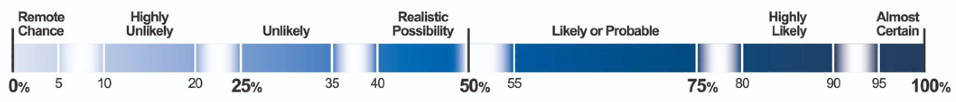
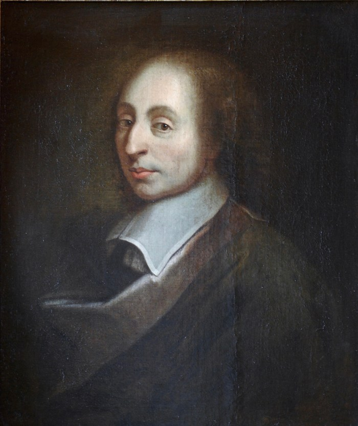
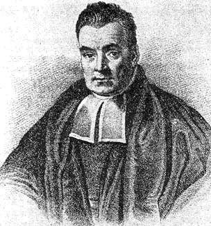
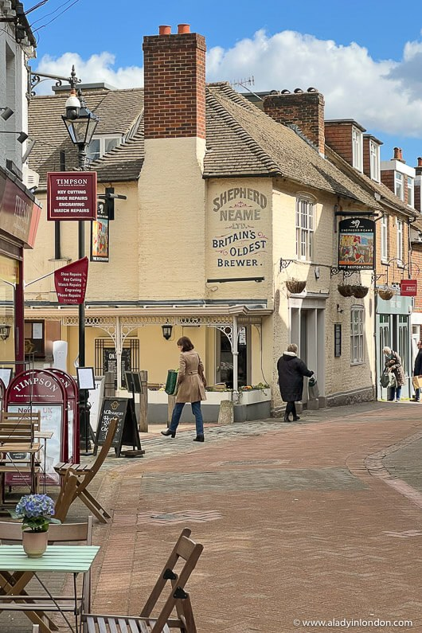
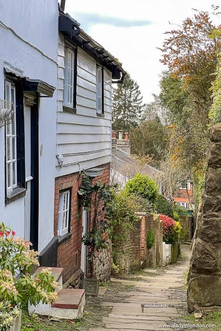
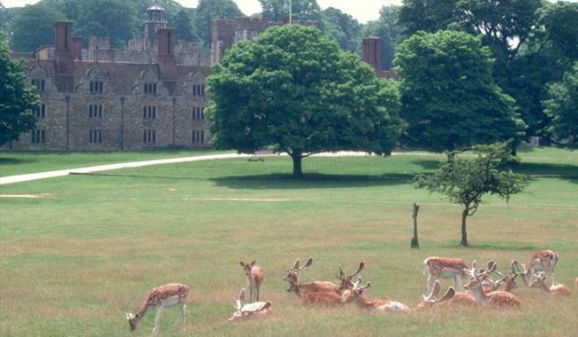
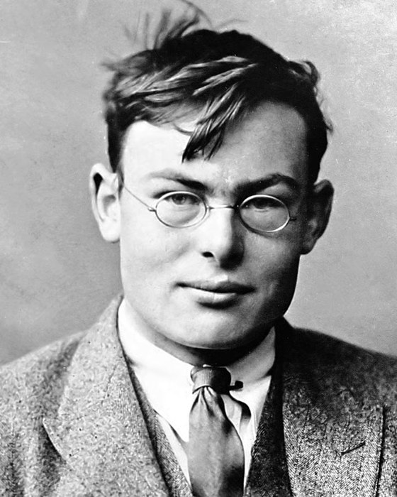
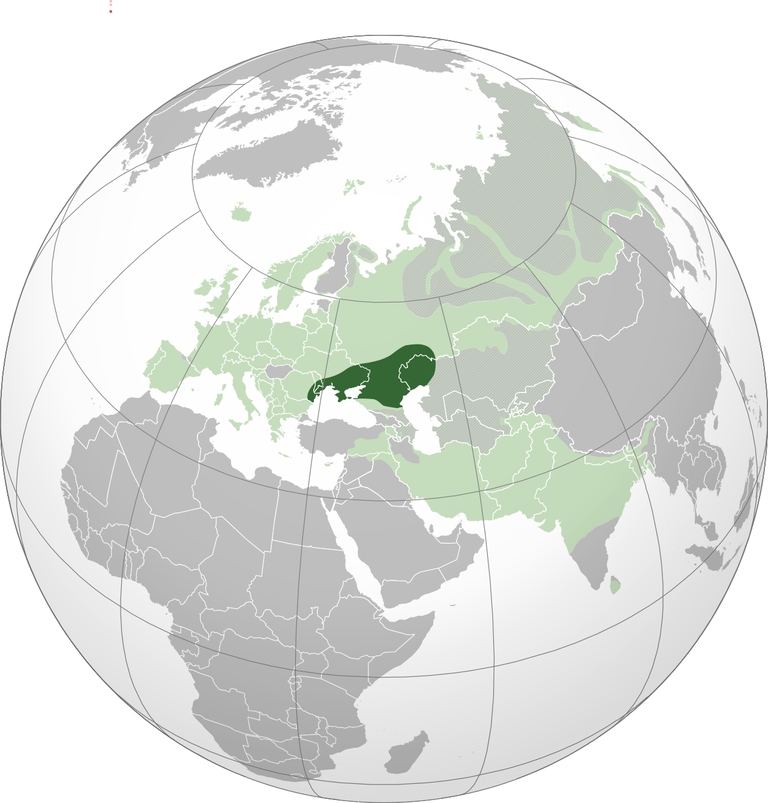

Trinity College Dublin
Coláiste na Tríonóide, Baile Átha Cliath
The University of Dublin
LIU44008 · Pragmatics II
Week 5
Probability and Priors
Dr. Thomas Stephen
School of Linguistic, Speech & Communication Sciences
Semester 1 · Michaelmas
This week
How should a listener’s beliefs change when someone speaks?
A listener’s uncertainty can be modelled as a probability distribution over the ways the world might be, and interpreting an utterance as updating that distribution: probability, entropy, conditional probability, Bayes’ rule and expected value.
Figures: Pascal · Bayes · Ramsey · de Finetti · Degen · Data: the medical test paradox · probability words · Linda · the wager · the St Petersburg game · colour terms · three doors · odd sentences · Indo-European cognates
Concepts and skills
Concepts
- Probability distributions, written as functions.
- Independent events and the product rule.
- The normal distribution.
- Surprisal, entropy and information.
- Conditional probability.
- Hypothesis, evidence, prior, likelihood and posterior.
- Expected value; degrees of belief.
Skills
- Compute probabilities from counts.
- Multiply probabilities along a tree for independent events.
- Compute surprisal and entropy by hand.
- Compute a conditional probability from counts.
- Annotate Bayes’ rule and compute a posterior.
- Update a belief one piece of evidence at a time.
- Read a conditional probability table by row and by column.
Today
Empirical
- The medical test paradox
- Probability words
- The probability yardstick
- Linda
- Pascal’s wager
- The St Petersburg game
- Pascal’s mugging
Historical
- Probable
- Reverend Thomas Bayes
- Ramsey and de Finetti
- A Dutch book
Formal
- Probability
- Probability distributions
- The normal distribution
- Entropy
- Independent events
- Conditional probability
- Reading Bayes’ rule
- Updating beliefs
- A speaker’s choices
Applied
- Three doors
- The noisy channel
- Colour terms as compression
- The Indo-European homeland
- Chains of learners
- Prior beliefs and projection
This week
Readings
Kunin, Daniel, Jingru Guo, Tyler Dae Devlin & Daniel Xiang. Seeing Theory: A Visual Introduction to Probability and Statistics, chapters 1, 2, 3 and 5. seeing-theory.brown.edu.
Tonhauser, Judith, David Beaver & Judith Degen (2018). How Projective is Projective Content? Gradience in Projectivity and At-issueness. Journal of Semantics 35.
Olah, Christopher (2015). Visual Information Theory. colah.github.io/posts/2015-09-Visual-Information.
Arbital. Bayes’ rule. lesswrong.com/w/bayes-rule.
I
Empirical
STRAND 01 / 04 · LIU44008 · Week 5
Bets and judgements
How people reason about chance
The medical test paradox
(1)Suppose 1 in 10,000 people have a certain disease, and there is a medical test that is 99% accurate. This means that if you do have the disease, the test comes back positive with 99% probability, and if you do not have the disease, the test comes back negative with 99% probability. It is wrong 1% of the time.If your test result comes back positive, what’s the probability that you have the disease?
Empirical
The medical test paradox
Of 1,000,000 people, 100 have the disease and 99 of them test positive. Of the 999,900 without it, 9,999 test positive.
Of the 10,098 positive results, 99 come from people with the disease, so \(P(\text{disease} \mid +) = 99/10{,}098 \approx 0.0098\), about 1 in 100. The disease is so rare that false positives swamp true ones.
The base-rate fallacy is neglecting how rare the disease is, its base rate. It was named in Maya Bar-Hillel’s 1975 thesis; she is the daughter of the logician Yehoshua Bar-Hillel.
Bar-Hillel (1980), Acta Psychologica 44.
Probability words
(2)a.possibleb.likelyc.probablyd.a real possibilitye.almost certainlyf.highly unlikely
Empirical
Probability words
Kent (1964) recalls a 1951 intelligence estimate that called a Soviet attack on Yugoslavia a serious possibility. His colleagues read the phrase as anything from a 20% to an 80% chance.
Mauboussin & Mauboussin (2018) asked 1,700 people to put numbers on such phrases. A real possibility ranged from 20% to 80%, and likely from 55% to 90%.
On the Horn scale ⟨possible, likely, certain⟩, saying possible implicates that likely does not hold.
Kent (1964), Studies in Intelligence 8; Mauboussin & Mauboussin (2018), Harvard Business Review.
Empirical
The probability yardstick

The UK’s Professional Head of Intelligence Assessment ties each probability word to a range of the scale, from remote chance, under 5%, to almost certain, 95% and above. The ranges leave gaps between them.
Analysts use the words in place of numbers, so that judgements based on little quantitative data do not read as more precise than they are.
PHIA Probability Yardstick, Explaining uncertainty in UK intelligence assessment, gov.uk (2025).
Linda
(3)Linda is 31, single, outspoken and very bright. She studied philosophy and as a student campaigned against discrimination and joined anti-nuclear protests.a. Linda is a bank teller.b. Linda is a bank teller and is active in the feminist movement.
Empirical
The conjunction fallacy
Tversky & Kahneman (1983) found that 85% of participants judged (3b) more probable than (3a). A conjunction can never be more probable than either of its parts: \(P(A \text{ and } B) \le P(A)\).
Dulany & Hilton (1991) and Politzer & Noveck (1991) argue that, beside (3b), (3a) is heard as Linda is a bank teller and is not active in the feminist movement, a quantity implicature.
Hertwig & Gigerenzer (1999) found that the error falls when the question asks how many of 100 women like Linda are bank tellers.
Tversky & Kahneman (1983), Psychological Review 90, (3) adapted; Dulany & Hilton (1991), Social Cognition 9; Politzer & Noveck (1991), Journal of Psycholinguistic Research 20; Hertwig & Gigerenzer (1999), Journal of Behavioral Decision Making 12.
Pascal’s Wager
God exists
God does not exist
Wager that God exists
infinite reward
small loss
Wager that God does not exist
infinite loss
small gain
Empirical
Pascal’s wager

Blaise Pascal
1623 – 1662
Pascal (1670), Pensées, published after his death: if the probability that God exists is above zero, an infinite reward multiplied by it outweighs any finite stake, so the wager favours belief.
Expected value is the payoff of each outcome multiplied by its probability, summed over the outcomes. Hacking (1972) reads the wager as the first argument that chooses between acts by their expected value.
Pascal had worked out the mathematics of fair stakes in his 1654 letters with Fermat, starting from the Chevalier de Méré’s question about dividing the stakes of an unfinished game.
Pascal (1670), Pensées; Hacking (1972), American Philosophical Quarterly 9.
The St Petersburg game
A fair coin is tossed until it lands heads. Heads on the first toss pays €2, on the second €4, on the third €8, doubling each time.
How much would you pay to play this game?
Empirical
The St Petersburg paradox
Every row adds €1 to the expected value of the payout, so the expected value of the game is infinite.
Nicolaus Bernoulli posed the game in a letter to Montmort in 1713, and his cousin Daniel published an answer in St Petersburg in 1738.
Toss
P
Payout
P × payout
1
0.5
€2
€1
2
0.25
€4
€1
3
0.125
€8
€1
4
0.0625
€16
€1
…
…
…
…
Total
∞
N. Bernoulli (1713), letter to Montmort; D. Bernoulli (1738), Commentarii Academiae Scientiarum Imperialis Petropolitanae 5.
Empirical
Pascal’s mugging
Bostrom (2009): an unarmed mugger asks Pascal for his wallet and promises to return twice the money the next day. Pascal refuses, because the chance that the mugger keeps his word is too small.
The mugger then promises a thousand quadrillion happy days of life. Pascal’s probability that the promise is kept is tiny, but the reward is large enough to make the expected value of paying positive, and Pascal hands over the wallet.
Yudkowsky (2007): in his version the mugger asks for five dollars and threatens to kill an astronomically large number of simulated people if refused.
Bostrom (2009), Analysis 69; Yudkowsky (2007), Pascal’s Mugging: Tiny Probabilities of Vast Utilities, Overcoming Bias.
II
Historical
STRAND 02 / 04 · LIU44008 · Week 5
Belief and evidence
Historical
Probable
Hacking (1975) dates probability in its modern sense to around 1660. Before then, a probable opinion was one approved by authorities or by respected testimony.
Gibbon could still write in the eighteenth century of a report that was “probable but undoubtedly false”. Hacking traces the change through Wilkins, who wrote once in 1640 and again in 1668.
The vocabulary of chance comes from dice. Hazard first named a dice game, aleatory comes from Latin alea, a die, and chance from Old French cheance, the fall of the dice.
Hacking (1975), The Emergence of Probability, ch. 3; Online Etymology Dictionary.
Historical
Reverend Thomas Bayes

Thomas Bayes
c. 1701 – 1761
An Essay towards Solving a Problem in the Doctrine of Chances was found among Bayes’s papers by Richard Price, who read it to the Royal Society in 1763, two years after Bayes died.
The essay made two contributions. First, it expressed beliefs as probabilities, defining probability by the value it is reasonable to put on an expectation.
Second, it gave a rule for updating beliefs on evidence, which Laplace (1774) later stated in its general modern form.
The only known portrait comes from a 1936 history of life insurance and is of doubtful authenticity. A note on it remarks that “Bayes’s posterior is better known than his prior”.
Bayes had been a Presbyterian minister in Tunbridge Wells.
Bayes (1763), Philosophical Transactions 53; Laplace (1774); portrait note in P. M. Lee, History of Statistics pages, University of York.
Historical
“Royal” Tunbridge Wells
Historical
“Royal” Tunbridge Wells
Historical
“Royal” Tunbridge Wells
Historical
Sevenoaks

Historical
Sevenoaks

Historical
Sevenoaks

Historical
Ramsey and de Finetti

Frank Ramsey
1903 – 1930
Bruno de Finetti
1906 – 1985
Ramsey (1926) treats probability as degree of belief, measured by the odds at which a person is willing to bet. Being rational is acting according to the laws of probability on your beliefs. Anyone whose degrees of belief break the laws of probability could have a book made against them.
de Finetti (1937): a bookmaker can then sell you a set of bets that you lose whatever happens, a Dutch book.
Ramsey did most of the English translation of Wittgenstein’s Tractatus as an undergraduate, and died at 26. de Finetti (1974), Theory of Probability, opens with PROBABILITY DOES NOT EXIST, in capitals.
Ramsey (1926), in Ramsey (1931), The Foundations of Mathematics; de Finetti (1937), Annales de l’Institut Henri Poincaré 7; de Finetti (1974), Theory of Probability, vol. 1, preface.
Historical
A Dutch book
England v France
Anna’s degree of belief
Bookmaker’s price for a €1 ticket
If it happens, Anna gets
France win
0.55
€0.52
€1
Draw
0.30
€0.28
€1
England win
0.25
€0.23
€1
Total
1.10
€1.03
€1
Anna favours France, the stronger side, and her degrees of belief sum to 1.10. Each price is below her degree of belief, so by her own lights every ticket is a good bet: the French ticket costs €0.52, and she thinks it is worth €0.55. She buys all three; exactly one result happens, so whatever the score she loses:
\[\text{€}1 - (\text{€}0.52 + \text{€}0.28 + \text{€}0.23) = -\text{€}0.03\]
After de Finetti (1937).
III
Formal
STRAND 03 / 04 · LIU44008 · Week 5
Conditioning
Conditional probability and Bayes’ rule
Formal
Probability
32 objects
14
0.44
3
0.09
9
0.28
6
0.19
With counts, the probability of an outcome is its count divided by the total: 14 of the 32 objects are blue squares, a probability of 0.44.
The probability of an event is the sum over its outcomes: \(P(\text{blue}) = 0.44 + 0.28 = 0.72\). The probability that an event does not happen is 1 minus the probability that it does.
Formal
Probability distributions
Distribution
Outcomes and probabilities
a fair coin
heads, 0.5 · tails, 0.5
a fair die
1, 0.17 · 2, 0.17 · 3, 0.17 · 4, 0.17 · 5, 0.17 · 6, 0.17
signalling game
, 0.44 · , 0.09 · , 0.28 · , 0.19
the next word after the cat sat on the
mat, 0.7 · floor, 0.15 · sofa, 0.1 · other, 0.05
A probability distribution lists the possible outcomes and gives each one a probability between 0 and 1. The probabilities sum to 1.
A uniform or flat distribution gives every outcome the same probability, like a fair coin or a fair die.
A listener’s beliefs are distributions too: over the objects a word could pick out, or over the words that might come next.
Formal
Distributions as functions
\(P\)
{ ⟨, 0.44⟩, ⟨, 0.09⟩, ⟨, 0.28⟩, ⟨, 0.19⟩ }
\(\sem{\textit{blue}}\)
{ ⟨, 1⟩, ⟨, 0⟩, ⟨, 1⟩, ⟨, 0⟩ }
\(P(\cdot \mid \textit{blue})\)
{ ⟨, 0.61⟩, ⟨, 0⟩, ⟨, 0.39⟩, ⟨, 0⟩ }
A probability distribution over a set of outcomes \(S\) is a function \(P : S \to [0, 1]\) whose values sum to 1. Like any function, it is a set of ordered pairs: each outcome paired with its probability.
The meaning of blue has the same shape. \(\sem{\textit{blue}}\), of type \(\langle e, t \rangle\), pairs each object with 1 or 0; a distribution pairs it with a number between 0 and 1, and the numbers must sum to 1.
Multiplying the two functions object by object and normalising gives the listener’s distribution after blue.
Formal
The normal distribution
A normal distribution is a symmetric bell curve fixed by its mean μ and standard deviation σ. About 68% of values lie within one standard deviation of the mean, and about 95% within two.
Outside language
In speech
heights of adults of the same sex
voice onset time of one speaker’s /p/, or of their /b/
errors in repeated measurements
first and second formants of one speaker’s vowel
birth weights
a speech category, as listeners learn it
Clayards, Tanenhaus, Aslin & Jacobs (2008), Cognition 108.
Formal
Surprisal
probability
1
0.5
0.25
0.125
0.44
surprisal
0 bits
1 bit
2 bits
3 bits
1.2 bits
The surprisal of an outcome with probability \(p\) is \(\log_2(1/p)\) bits: the number of times 1 has to be halved to get down to \(p\).
A certain outcome carries no surprise, and each halving of the probability adds one bit. Probabilities between the halvings give fractions of a bit: the blue square, at 0.44, carries about 1.2 bits.
The rarer the outcome, the more you learn when it happens.
Shannon (1948), Bell System Technical Journal 27.
Formal
Entropy
\[H = \sum_x P(x)\,\log_2 \frac{1}{P(x)}\]
Entropy is the average surprisal of a distribution: the surprisal of each outcome, weighted by its probability, added up.
For a distribution of 0.5, 0.25, 0.125 and 0.125: 0.5 × 1 + 0.25 × 2 + 0.125 × 3 + 0.125 × 3 = 1.75 bits.
Entropy is also the average number of yes/no questions needed to find the outcome when the best questions are asked. For that distribution, the best first question asks about the likeliest outcome.
Shannon (1948), Bell System Technical Journal 27.
Formal
The entropy of a distribution
Entropy is a property of a whole distribution. It is 0 bits when one outcome is certain, and largest when the distribution is flat: \(\log_2 n\) bits for \(n\) equally likely outcomes, so 1 bit for a coin, 2 for four objects and about 2.58 for a die.
Most beliefs sit in between. The four objects with counts 14, 3, 9 and 6 have 1.81 bits, and the next-word distribution for the cat sat on the has 1.32 bits.
Shannon (1948).
Formal
Independent events
Two events are independent when one happening leaves the probability of the other unchanged, like two tosses of a fair coin.
For independent events, multiply along the branches: \(P(A \text{ and } B) = P(A) \times P(B)\). Two heads in a row: 0.5 × 0.5 = 0.25. The four leaves sum to 1.
With unequal probabilities the rule is the same. If it rains on 30% of days and, independently, the bus is late on 20%, both happen on 0.3 × 0.2 = 0.06 of days.
Formal
Conditional probability
\[P(A \mid B) = \frac{P(A \text{ and } B)}{P(B)}\]
14
0.82
3
0.18
The conditional probability of A given B keeps only the outcomes in B and rescales them to sum to 1.
Of the 17 squares, 14 are blue, so \(P(\text{blue} \mid \text{square}) = 0.82\). Hearing square raises the probability of the blue square from 0.44 to 0.82.
Formal
Entropy and information
Conditioning on a word lowers the listener’s entropy. With four equally likely objects the listener starts at 2 bits; blue leaves 1 bit, and blue circle leaves none.
The information a word carries is how far it lowers the entropy: here blue carries 1 bit and circle another. With the counts on the Probability slide the figures are less round: 1.81 bits before, 0.97 after blue.
Shannon (1948).
Formal
Hypothesis and evidence
\(H\), the hypothesis
\(E\), the evidence
the weather
it will rain today
dark clouds this morning
the test
you have the disease
a positive test result
a word
the speaker means the blue circle
the word circle
The hypothesis \(H\) is the claim you want to know about.
The evidence \(E\) is what you have observed.
\(P(H \mid E)\), read the probability of H given E, is how probable \(H\) is once \(E\) is known.
Formal
Reading Bayes’ rule
\[\color{#9b2c1f}{\underbrace{P(H \mid E)}_{\text{posterior}}} \;=\; \frac{\color{#2f855a}{\overbrace{P(E \mid H)}^{\text{likelihood}}}\;\cdot\;\color{#2b6cb0}{\overbrace{P(H)}^{\text{prior}}}}{\color{#6b6b6b}{\underbrace{P(E)}_{\text{evidence}}}}\]
prior \(P(H)\)
how probable the hypothesis was before the evidence
likelihood \(P(E \mid H)\)
how expected the evidence is if the hypothesis is true
evidence \(P(E)\)
how expected the evidence is overall
posterior \(P(H \mid E)\)
how probable the hypothesis is after the evidence
The rule takes the prior, multiplies it by how well the hypothesis predicts the evidence, and divides by how common the evidence is overall.
Bayes (1763), Philosophical Transactions 53; Laplace (1774).
Formal
Bayes’ rule in numbers
\[\color{#9b2c1f}{\underbrace{0.0098}_{\text{posterior}}} \;=\; \frac{\color{#2f855a}{\overbrace{0.99}^{\text{likelihood}}}\;\times\;\color{#2b6cb0}{\overbrace{0.0001}^{\text{prior}}}}{\color{#6b6b6b}{\underbrace{0.0101}_{\text{evidence}}}}\]
For (1), \(H\) is you have the disease and \(E\) is a positive result. The evidence term is the chance of a positive result overall: 0.0001 × 0.99 + 0.9999 × 0.01 ≈ 0.0101, the true positives plus the false positives.
Since \(P(E)\) only rescales, the rule is often written \(P(H \mid E) \propto P(E \mid H)\,P(H)\).
Formal
Updating beliefs
A listener hears Great weather for a picnic! and starts from a low prior that it is sarcastic, 0.05. Each cue that is more likely with sarcasm than without raises it: a drawn-out intonation to 0.17, the rain outside to 0.39, a wink to 0.76.
A posterior becomes the prior for the next cue, and no single cue settles it.
Formal
A speaker’s choices
Prior
blue
green
square
circle
0.44
0.42
0
0.58
0
0.09
0
0.65
0.35
0
0.28
0.39
0
0
0.61
0.19
0
0.63
0
0.37
Each row is a conditional distribution \(P(w \mid s)\): how often a speaker uses each word for one object. Each row sums to 1.
\[P(\text{blue circle} \mid \textit{circle}) = \frac{P(\textit{circle} \mid \text{blue circle})\,P(\text{blue circle})}{P(\textit{circle})} = \frac{0.61 \times 0.28}{0.61 \times 0.28 + 0.37 \times 0.19} \approx 0.71\]
A listener who hears circle reads down its column and applies Bayes’ rule with the prior. From the meaning of circle alone, the same listener would assign 0.6 and 0.4.
IV
Applied
STRAND 04 / 04 · LIU44008 · Week 5
Inference from evidence
Probabilistic reasoning in and around language
Three doors
A car is behind one door and goats are behind the other two. You pick door 1. The host, who knows where the car is, opens door 3, which hides a goat.
Applied
The Monty Hall problem
Car behind
Prior
P(host opens 3)
Prior × likelihood
Posterior
Door 1
0.33
0.5
0.17
0.33
Door 2
0.33
1
0.33
0.67
Door 3
0.33
0
0
0
Switching wins with probability 0.67. The host never opens your door or the door with the car, and that rule sets the likelihoods.
If the host opens a door at random and it happens to show a goat, the likelihoods are equal and switching wins with probability 0.5 (Rosenthal 2008).
After vos Savant (1990) gave the answer in Parade, about 10,000 readers wrote in, nearly 1,000 of them with PhDs, most saying she was wrong. Erdős accepted it only after seeing a computer simulation.
Selvin (1975), American Statistician 29; vos Savant (1990), Parade; Rosenthal (2008), Math Horizons; Vazsonyi (1999).
Odd sentences
(6)The mother gave the candle the daughter.
(7)The girl was kicked by the ball.
Applied
The noisy channel
\[P(\text{meant} \mid \text{read}) \propto P(\text{meant}) \cdot P(\text{read} \mid \text{meant})\]
Gibson, Bergen & Piantadosi (2013): readers treat a sentence as a possibly corrupted signal. They often take (6) to mean that the candle went to the daughter, since a plausible meaning is a single dropped word away.
Readers corrected more when fewer changes were needed, and more readily assumed a dropped word than an added one. Reading (7) as the ball was kicked by the girl needs words exchanged, and readers rarely did it.
The model adapts Shannon’s (1948) noisy channel, a model of telephone lines; Levy (2008) applied it to parsing.
Gibson, Bergen & Piantadosi (2013), PNAS 110, (6) and (7) adapted; Levy (2008), EMNLP; Shannon (1948).
Applied
Colour terms as compression
A colour vocabulary compresses a continuous space into a few words. With 16 equally likely shades and four words, a word carries 2 bits and leaves 2 bits of uncertainty about the shade.
Zaslavsky et al. (2018) treat a vocabulary as minimising \(I(M;W) - \beta\, I(W;U)\): its complexity, the bits the words spend on meanings, minus \(\beta\) times its accuracy, the bits a word carries about the colour. The colour systems of the languages they studied are close to optimal at values of \(\beta\) just above 1, about 1.03.
Zaslavsky, Kemp, Regier & Tishby (2018), PNAS 115.
Applied
The Indo-European homeland
(8)English mother · German Mutter · Spanish madre · Sanskrit mātṛ
Bouckaert et al. (2012) coded cognates like (8) in basic vocabulary from 103 Indo-European languages and adapted a Bayesian method used to trace virus outbreaks. The posterior favoured an origin in Anatolia, 8,000 to 9,500 years ago, spreading with farming.
Chang et al. (2015) added ancestry constraints, fixing known ancestors such as Latin above their descendants. The analysis then supported the steppe north of the Black Sea, about 6,500 years ago.
Ancient DNA has since found a large migration from the steppe into Europe about 4,500 years ago (Haak et al. 2015).

Bouckaert et al. (2012), Science 337; Chang, Cathcart, Hall & Garrett (2015), Language 91; Haak et al. (2015), Nature 522; map: Joe Roe, Wikimedia Commons, CC BY-SA 4.0.
Applied
Chains of learners
Each generation learns a language from the speech of the one before, and its own speech becomes the next generation’s data.
Griffiths & Kalish (2007) proved that if Bayesian learners each pick a language at random from their posterior, the chain settles on the learners’ prior: languages come to reflect what learners expect.
Kirby, Cornish & Smith (2008) passed an artificial language for coloured moving shapes along chains of participants. It became easier to learn and, when ambiguous words were filtered out, compositional.
Griffiths & Kalish (2007), Cognitive Science 31; Kirby, Cornish & Smith (2008), PNAS 105.
Applied
Prior beliefs and projection
(4)Julian is Cuban. Did Sandra discover that Julian dances salsa?
(5)Julian is German. Did Sandra discover that Julian dances salsa?
Degen & Tonhauser (2021) asked participants how certain the speaker of questions like (4) and (5) is that Julian dances salsa. Certainty was rated higher when the fact made the content more probable, as in (4).
Tonhauser, Beaver & Degen (2018) found that projection comes in degrees and varies across expressions. Their Gradient Projection Principle states that content projects to the extent that it is not at issue.
Degen & Tonhauser (2021), Open Mind 5, items adapted; Tonhauser, Beaver & Degen (2018), Journal of Semantics 35.
Formal
Other notations
This moduleAlso written
\(P(A \mid B)\)conditional probability
\(\Pr(A \mid B)\), \(p(A \mid B)\)
\(P(A \text{ and } B)\)probability of both
\(P(A \wedge B)\), \(P(A \cap B)\), \(P(A, B)\)
\(P(x) \propto f(x)\)proportional to
\(P(x) = f(x)/Z\) with \(Z = \sum_y f(y)\), the normalising constant
\(\{\langle s, P(s) \rangle, \dots\}\)a distribution as a set of pairs
a table; \((0.44, 0.09, 0.28, 0.19)\) as a vector
\(\sem{u}(s)\)1 if \(u\) is true of \(s\), 0 if not
\(\mathbb{1}[s \in \sem{u}]\) an indicator function
Scontras, Tessler & Franke, Probabilistic Language Understanding, problang.org.
Concepts and skills
Concepts
- Probability distributions, written as functions.
- Independent events and the product rule.
- The normal distribution.
- Surprisal, entropy and information.
- Conditional probability.
- Hypothesis, evidence, prior, likelihood and posterior.
- Expected value; degrees of belief.
Skills
- Compute probabilities from counts.
- Multiply probabilities along a tree for independent events.
- Compute surprisal and entropy by hand.
- Compute a conditional probability from counts.
- Annotate Bayes’ rule and compute a posterior.
- Update a belief one piece of evidence at a time.
- Read a conditional probability table by row and by column.